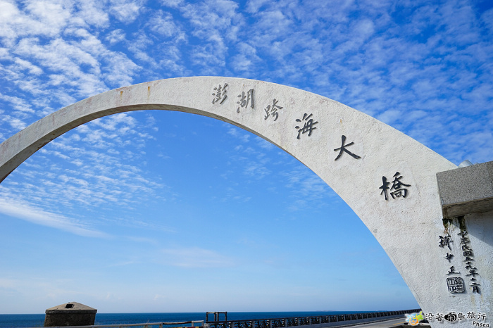
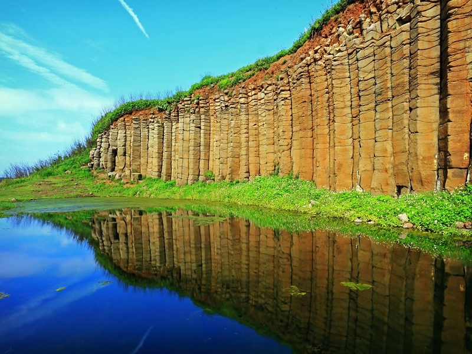
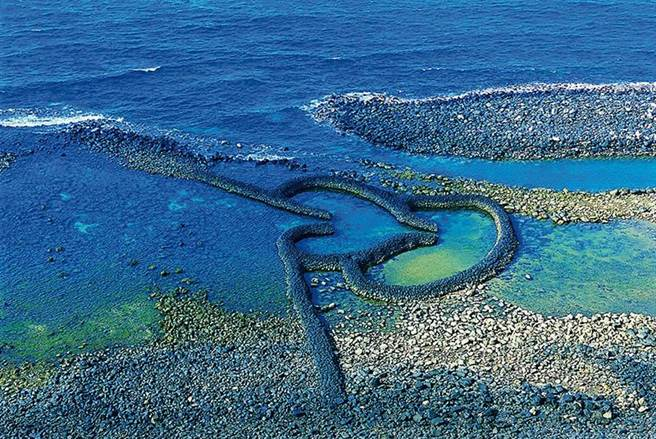

一座被海風吹拂的島嶼群
澎湖位於臺灣海峽，是由許多島嶼組成的群島。 藍色的大海、潔白的沙灘、特殊的玄武岩地形， 讓澎湖擁有獨特的海島風景。
除了自然景觀之外，澎湖也保留了許多傳統文化， 像是石滬、古厝以及地方特色美食。
每到夏季，澎湖夜空中的花火更成為許多人 來到這座島嶼的重要回憶。
來看看這座島上不能錯過的風景

連接白沙與西嶼的重要交通建設， 也是澎湖非常具有代表性的地標。

火山熔岩冷卻後形成的特殊地形， 在澎湖可以看到壯觀的柱狀岩壁。

位於七美島的著名景點， 兩個心形石滬排列在海岸邊，非常浪漫。
澎湖保存許多傳統民宅， 可以從建築看見當地居民過去的生活方式。
位於通樑保安宮旁的巨大榕樹， 擁有許多交錯的氣根，是澎湖知名景觀。
藍色海水、海蝕地形與海風吹拂， 組成澎湖最經典的海島風景。
從岩石、石滬到傳統建築
澎湖有非常豐富的火山地形， 其中最具代表性的就是柱狀玄武岩。 當火山熔岩慢慢冷卻時，會形成規則的柱狀裂隙， 最後變成現在看到的特殊岩壁。
石滬是澎湖傳統的捕魚方式之一。 當潮水退去時，魚群會被石牆阻擋， 居民就能利用這種方式捕魚。 雙心石滬則因為特殊的心形造型而聞名。
澎湖傳統古厝常使用珊瑚石、玄武岩等 當地容易取得的材料建造。 厚實的牆壁也能幫助居民抵抗強烈的海風， 展現出海島居民因地制宜的智慧。
旅行當然也要吃東西 🍴
澎湖代表性的特色冰品， 酸甜清爽又有漂亮的紫紅色。
使用黑糖製作的傳統糕點， 香甜Q軟，是澎湖常見伴手禮。
澎湖盛產花生， 可以做成各種花生特色食品。
使用澎湖特有植物風茹製作， 是具有地方特色的茶飲。
一些你可能不知道的小事情
夜晚的澎湖，還有一場寫在天空上的風景。